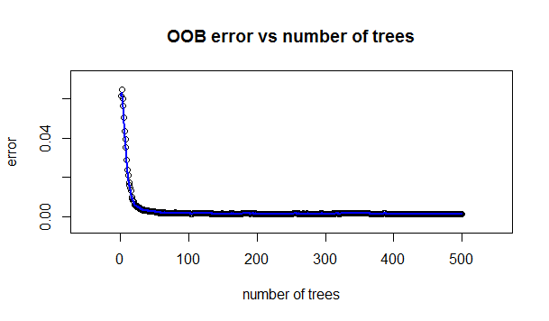
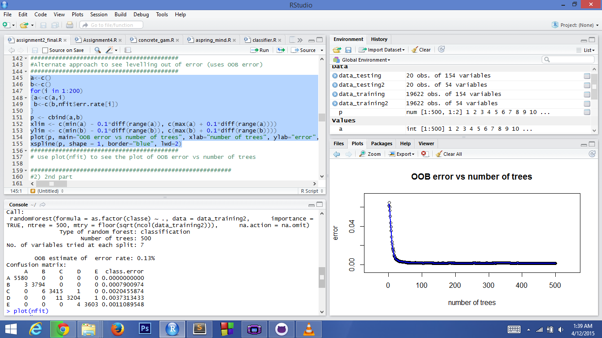

Practical Machine Learning: Project Writeup
The R script does the following thing to solve this classification problem:
- It loads the data from the given train and test sets
- It then does some data preprocessing like removing the first 6 columns. They contain dates, times, serial numbers etc. and hence we can get rid of them.
- It then does some further pre-processing of the data by removing the columns which have NA's as these create problems while applying Machine Learning Algorithms
- After that it builds a random forest classifier with 500 trees using all the remaining columns.
- The forest generated has an Out of Bag error of 0.13% and confusion matrix and OOB error vs number of trees as shown in the screenshot and plot respectively
- The trained random forest model is then used to make predictions for the 20 test data points (All of which got accepted :) )
Out of Bag Error vs Number of trees plot

R Screenshot showing code, plot, OOB error and confusion matrix
